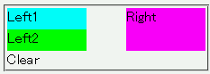
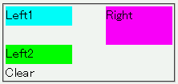

フロートが連続して置かれているときフロートの上端は必ず、直前にあるフロートの下端より下に配置される。例えば、右フロートに後続する左フロートが右フロートの下端より下に配置されてしまう。
<div style="float:left; width:40%; height:1.5em; background:aqua;">Left1</div> <div style="float:right; width:40%; height:3em; background:fuchsia;">Right</div> <div style="float:left; width:40%; height:1.5em; background:lime;">Left2</div> <div style="clear:both;">Clear</div>
左フロート、右フロート、左フロートの順に置かれています。2つ目の左フロートは1つ目の左フロートの直後に配置されるはずです。
Moz1.0.1での表示
Opera6.05での表示
下にずれて配置されるフロートにclearプロパティを設定すると、このバグを回避できます。このとき、floatプロパティの指定値とclearプロパティの指定値を同じにしてください。
<div style="float:left; width:40%; height:1.5em; background:aqua;">Left1</div> <div style="float:right; width:40%; height:3em; background:fuchsia;">Right</div> <div style="float:left; width:40%; height:1.5em; background:lime; clear:left;">Left2</div> <div style="clear:both;">Clear</div>
左フロートまたは右フロートだけを連続して置いたときのバグとしてOperaバグ043があります。
Opera6.05では不具合の発生が確認されました。Opera7.0では標準・互換モードともに不具合の発生は確認されませんでした。